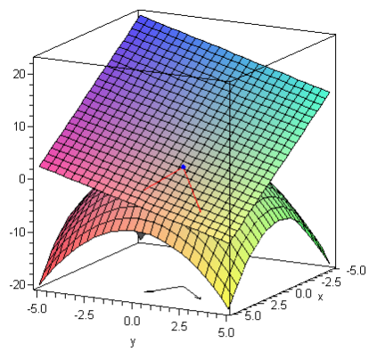
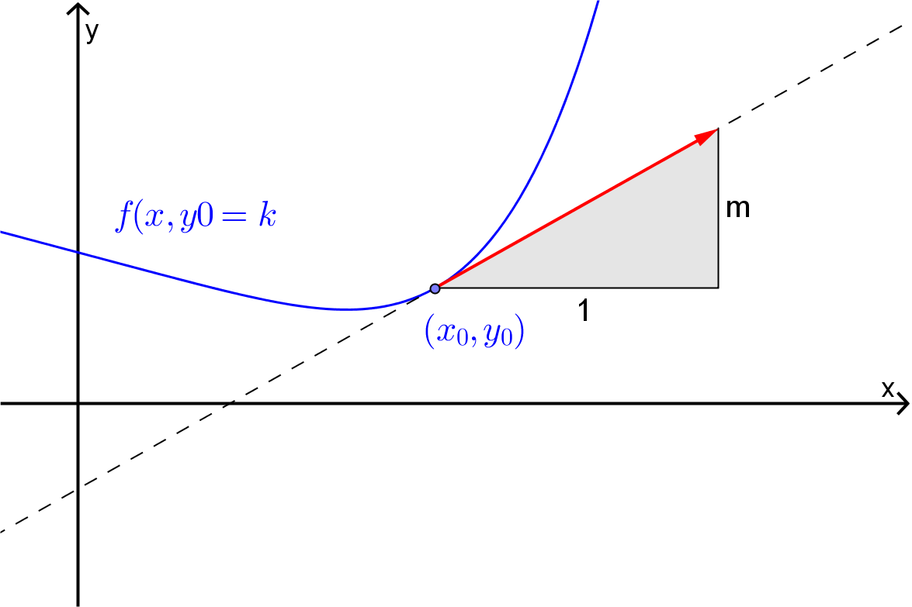

We have noted previously that the instantaneous rate of change of a function \(z = f(x,y)\) at the point \((x,y) = (x_0,y_0)\) will depend on the direction in which the independent variables are changing.
Example6.1.
Consider the function \(f(x,y) = x^2-y^2\text{.}\) The graph of this function is shown below. At \((x,y)=(0,0)\text{,}\)\(f=0\text{.}\) As we can see by looking at the graph, as we move away from the origin along the positive \(x\)-axis the value of \(f\) is increasing, i.e. the rate of change of the function will be positive. However, if we move away from the origin along the positive \(y\)-axis the value of \(f\) is decreasing, i.e. the rate of change of the function will be negative.
Figure6.2.3D plot of \(f(x,y) = x^2-y^2\text{.}\)
In the case that the direction is parallel to the positive x-axis we already know that the slope is given by the partial derivative \(f_x(x_0,y_0)\) and in the case that the direction is parallel to the positive \(y\)-axis the slope is given by \(f_y(x_0,y_0)\text{.}\) In this section we will look at the problem of finding the slope of the function if we move away from the point \((x,y) = (x_0,y_0)\) in any direction.
Section6.1Directional Derivatives
Firstly, note that \(2D\) vectors are a convenient way to specify directions in the \(xy\)-plane. For example, we could say the slope of the function in the direction of the vector \(\mathbf{i} = \langle 1, 0 \rangle\) is \(f_x(x_0,y_0)\) while in the direction of the vector \(\mathbf{j} = \langle 0,1 \rangle\) it is \(f_y(x_0,y_0)\text{.}\) Thus the problem we are looking at is that of finding the slope of the function at the point \((x,y) = (x_0,y_0)\) in the direction given by some vector \(\mathbf{u} = \langle u_1, u_2 \rangle\text{.}\) Mathematically, we would say that we are trying to find the directional derivative of the function \(f(x,y)\) at the point \((x_0,y_0)\) in the direction \(\mathbf{u}\text{.}\) The notation that we use to denote this directional derivative is
One way to approach the problem of finding the directional derivative \(D_{\mathbf{u}}f(x_0,y_0)\) is to use the tangent plane to the function at the point \((x_0,y_0)\text{,}\) i.e.
Then the slope of the function \(f(x,y)\) in the direction of \(\mathbf{u}\) is the slope of \(L(x,y)\) in that direction. If \(\hat{\mathbf{u}} = \langle u_1, u_2 \rangle\) is a unit vector in the direction of \(\mathbf{u}\) then the required slope is the amount by which the value of \(L\) changes as the independent variables change from \((x_0,y_0)\) to \((x_0+u_1,y_0+u_2)\text{,}\) i.e.
Consider the function \(z(x,y) = 5 - \dfrac{x^2+y^2}{2}\text{.}\)Figure 6.4 shows the graph of this function along with its the tangent plane at \((x,y) = (2,1)\text{.}\) Also shown on the diagram are the vectors \(\mathbf{u} = \langle 2,2 \rangle\) and \(\mathbf{v} = \langle 2,-1 \rangle\) drawn in the \(xy\)-plane with their tails at the point \((x,y) = (2,1)\text{.}\) Then the directional derivative \(D_{\mathbf{u}}(f(2,1))\) will be the slope of the line joining the points \((2,1,z(2,1))\) and \((4,3,L(4,3))\) while the directional derivative \(D_{\mathbf{v}}(f(2,1))\) will be the slope of the line joining the points \((2,1,z(2,1))\) and \((4,0,L(4,0))\text{.}\)

Figure6.4.3D plot of \(z(x,y) = 5 - \dfrac{x^2+y^2}{2}\) and the tangent plane at \((2,1)\text{.}\)
Example6.5.
The below Sage cell computes the tangent plane to the surface
\begin{equation*}
xy+yz^2+xz^3=54
\end{equation*}
at the point \((2,0,3)\) (shown in red). This surface is a level surface of the function \(f(x,y,z)=xy+yz^2+xz^3\text{.}\) The gradient vector is then a normal vector for the surface. Since we have a point on the surface, we can then determine an equation for the tangent surface:
The below Sage cell computes the tangent plane to a "rugby ball" at the point \((x_0,y_0)\) and the corresponding normal vector to the surface at this point (shown in red).
To summarise:
Definition6.7.Directional Derivative.
The directional derivative of the differentiable function \(f(x,y)\) at the point \((x_0,y_0)\) in the direction of the unit vector \(\hat{\mathbf{u}} = \langle u_1, u_2 \rangle\) is given by
Find the directional derivative of \(f(x,y) = \sin(x+2y)\) in the direction of the angle (from the positive \(x\)-axis) \(\theta = \dfrac{3 \pi}{4}\text{.}\)
Note that the directional derivative \(D_\mathbf{u} f(x_0,y_0)\) can be expressed in the terms of the scalar product if we use the following definition.
The gradient vector points in the direction of steepest ascent on the surface \(z=f(x,y)\text{.}\) The unit vector \(\mathbf{\hat{u}}\) in the direction of some angle is shown by the red arrow. (Note that when the angle is zero, the unit vector is parallel to the gradient vector.) The tangent line to the surface is plotted in green. The gradient of that tangent line is the directional derivative.
Example6.12.
Find the gradient vector for the function \(f(x,y) = e^{-x} \sin(y)\text{.}\) Hence find \(\nabla f(0,\pi/3)\) and the directional derivative in the direction of the origin.
Answer.
\(\nabla f = \left \langle -e^{-x}\sin(y), e^{-x}\cos(y) \right \rangle\)
The gradient vector has some interesting facts associated with it. Note that in the following remarks, we are assuming that \(\nabla f \neq \langle 0, 0 \rangle\text{.}\)
Remark6.13.
\(\nabla f\) points in the direction in which the directional derivative takes on its largest value. To see this, note that
At a given point \(\| \nabla f \|\) is fixed and so the largest value of \(D_{\mathbf{u}} f(x,y)\) will occur when \(\cos(\theta) = 1\text{,}\) i.e. when \(\theta = 0\) or put another way, when \(\hat{\mathbf{u}}\) is parallel to \(\nabla f\text{.}\) We can also see from this that the largest value that the directional derivative can take is \(\| \nabla f \|\text{.}\)
Similarly, the directional derivative takes on its smallest value in the direction of \(-\nabla f\) and has value \(- \| \nabla f \|\text{.}\)
Definition6.14.
For the function \(z=f(x,y)\text{,}\) the level curve passing through the point \((x_0,y_0)\) is given by
\(\nabla f(x_0,y_0)\) is orthogonal (i.e. at right angles) to the level curve passing through \((x_0,y_0)\text{.}\) To see this, run the Sage cell below, which plots the level curves of the function \(f(x,y)=xy+y^2-x^3\) and the corresponding gradient vectors \(\nabla f(x,y)\) in red.
Remark6.16.
As shown in Figure 6.17, a vector parallel to the tangent to this curve at the point \((x_0,y_0)\) will be \(\left \langle 1, \dfrac{dy}{dx} \right \rangle\text{.}\)

Figure6.17.Plot of \(f(x,y) = k\) (blue) and the tangent vector (red) at the point \((x_0,y_0)\text{.}\)
Thus a vector normal to the curve at the point \((x_0,y_0)\) will be \(\left\langle -\dfrac{dy}{dx},1\right\rangle\text{.}\) We will see subsequently, via implicit differentiation, that for the curve \(f(x,y)=k\text{,}\)
and so a vector normal to the curve at the point \((x_0,y_0)\) will be \(\left \langle \dfrac{f_x(x_0,y_0)}{f_y(x_0,y_0)}, 1 \right \rangle\text{,}\) which is parallel to \(\nabla f(x_0,y_0)\text{.}\)
Notice that since \(\nabla f(x_0,y_0)\) is orthogonal to the level curve passing through the point \((x_0,y_0)\) and that \(\nabla f (x_0,y_0)\) is the direction in which the directional derivative takes on its largest value, the “path of steepest ascent” on any surface \(z=f(x,y)\) is always at right angles to its contours. To see this, run the Sage cell below. This generates a 2D contour plot of \(z=f(x,y)\text{.}\) The unit vector \(\mathbf{hat{u}}\) starting at some point \((x,y)\) and pointing in the direction of some angle is shown by the red arrow. The gradient vector at the point \((x,y)\) is shown in orange.
Example6.18.
For the function \(f(x,y) = x^2y^3-3x\) find the directions in which the directional derivative at the point \((-2,4)\) is maximised, minimised and \(0\text{.}\)
Answer.
Maximised in the direction \(\mathbf{u} = \langle -259, 192 \rangle\text{;}\) minimised in the direction \(\mathbf{u} = \langle 259, -192 \rangle\text{;}\) and \(0\) when \(\mathbf{u} = \langle 192, 259 \rangle\)
For the function \(f(x,y) = x^2-y\) find the level curve, the tangent line and the gradient vector at the point \((-3,1)\text{.}\)
Answer.
The level curve is \(y=x^2-8\text{.}\)
The tangent line is \(y=-6x-17\text{.}\)
The gradient vector is \(\nabla f(-3,1) = \langle -6, -1 \rangle\)
Solution.
Since \(f(-3,1)=8\) the level curve through the point \((-3,1)\) is \(x^2-y=8\) or \(y=x^2-8\text{.}\) We can find the equation of the tangent by standard calculus to obtain
Find the directional derivative for \(f(x,y) = (x-2y)^2 + 5x^2\) at the point \((-3,1)\) in the direction of the point \((1,4)\text{.}\)
2.
Find the maximum value of the rate of change of \(h(s,t) = \dfrac{1}{\sqrt{s^2+t^2}}\) at \((3,4)\text{.}\)
3.
For the curve \(e^x \ln (y) - xy = 0\) use the gradient vector of a two variable function to find the tangent line and the normal line at the point \((2,e^2)\text{.}\)
4.
For the following contour plot for some unspecified function of two variables estimate the sign of the directional derivatives at:
Figure6.22.
The point \(A\) and in the direction of \(\mathbf{u} = \langle 1,2 \rangle\text{.}\)
The point \(B\) and in the direction of \(\mathbf{w} = \langle -1,-1 \rangle\text{.}\)
The point \(A\) and in the direction of the origin.
The point \(B\) and in the direction of the origin.
Section6.2In Three Variables
The concepts of the directional derivative and the gradient vector extend to functions of more than two variables. In this section we will look at some examples for functions of three variables.
Example6.23.
Find the rate of change of the function \(f(x,y,z) = xy+yz^2+xz^3\) at the point \((2,0,3)\) in the direction \(\hat{\mathbf{u}} = \left \langle -\dfrac{2}{3}, -\dfrac{1}{3}, \dfrac{2}{3} \right \rangle\text{.}\)
The maximum rate of increase at \(P\) is the maximum value of \(D_{\mathbf{u}} T(2,-1,2)\) which is
\begin{equation*}
\| \nabla T (2,-1,2) \| = \dfrac{400 \sqrt{337}}{e^{43}}\text{.}
\end{equation*}
Example6.25.
Find the equation of the tangent plane to the level surface of \(f(x,y,z) = x^2+y^2 - z + \cos(z)\) at the point \((-1,1,0)\text{.}\)
Answer.
\(2x-2y+z = -4\text{.}\)
Solution.
Since \(f(-1,1,0) = 3\text{,}\) the level surface for this function satisfies the equation
\begin{equation*}
x^2+y^2 - z + \cos(z) = 3\text{.}
\end{equation*}
A normal to this surface at the point \((-1,1,0)\text{,}\) and hence to the tangent plane at this point, is given by \(\nabla f (-1,1,0)\text{.}\) Now,
Find the directional derivative of \(g(x,y,z) = \dfrac{z-x}{z+y}\) at \((1,0,-3)\) in the direction \(\mathbf{a} = -6\mathbf{i} + 3\mathbf{j} - 2\mathbf{k}\text{.}\)
2.
By thinking of level surfaces to a function of \(3\) variables show that the normal lines to a sphere pass through its centre.